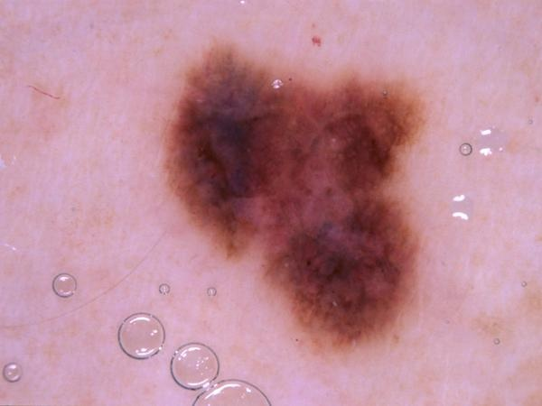
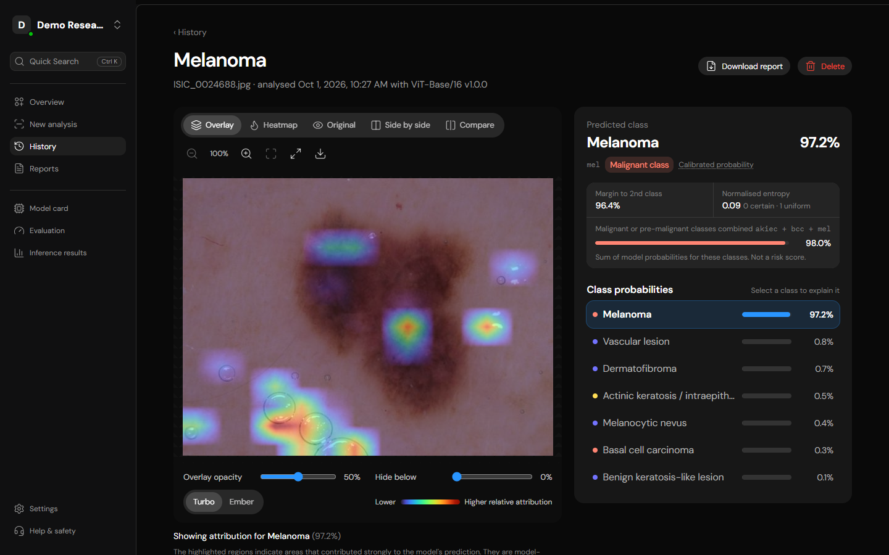
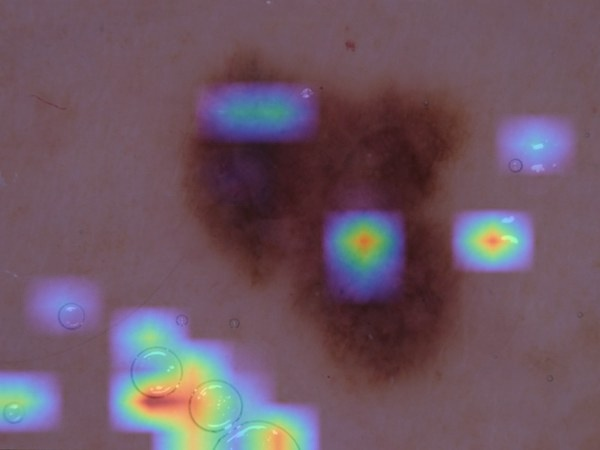
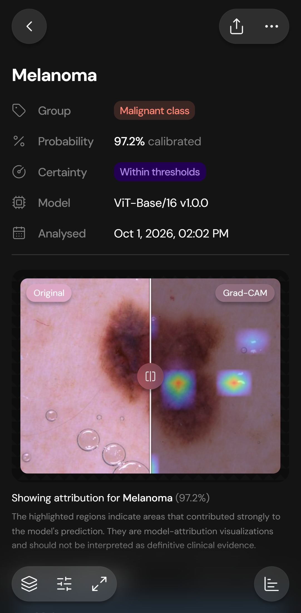
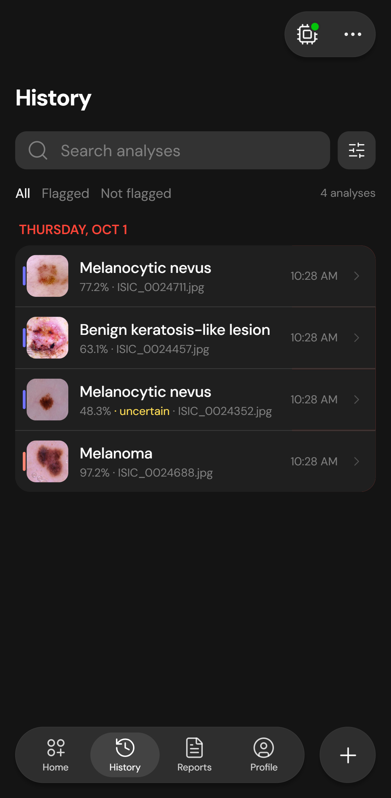
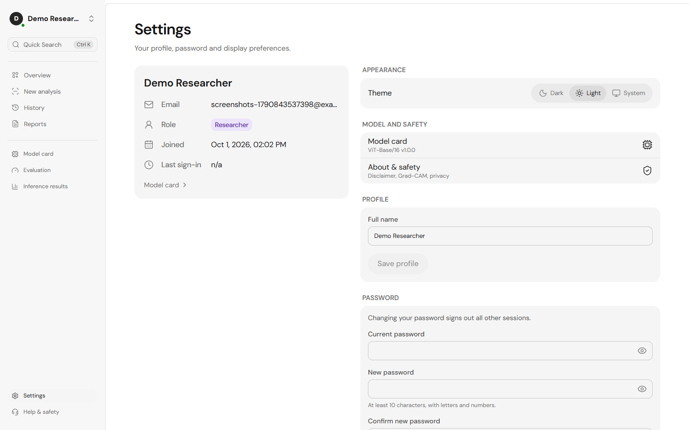
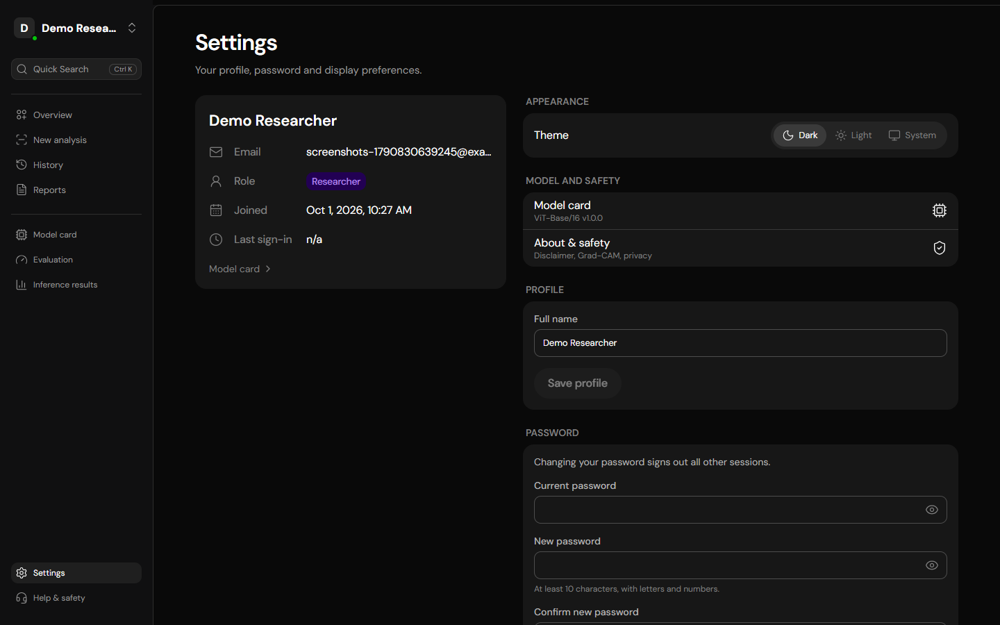

Interpretable AI for dermoscopic skin lesion analysis
Research & education prototype
The problem
A label alone is hard to trust.
Is the model looking at the lesion — or at a ruler, a hair, an ink mark?

The result

Every result explains itselfPrediction, probabilities and a Grad-CAM map, all from one analysis.
Calibrated confidenceTemperature-scaled, so a probability means more than a raw score.
Uncertainty flagsLow top probability or a small margin is called out, not hidden.
All seven classesNever a single verdict. Never a risk score.
Explainable by design
See where the model looked.
Grad-CAM for the predicted class, or any class you choose. Attribution of the model — not clinical evidence.
LowerHigher relative attribution

Original → Grad-CAM overlay
Phone & desktop
Made for the clinic desk and the pocket.
Swipe to compare, long-press for actions, history one thumb away.


Display preferences
Light · Dark · System


Applied at once. Remembered across sessions.
Evaluated, not promised
Real results on images the model never saw.
0
held-out test images (grouped by lesion)
0
accuracy
0
macro-F1
Melanoma: recall 0.71, precision 0.53. Every figure is read from the model’s own metrics.json.
Evaluation results on one public dataset — not guarantees for any individual
MelaDx7
Interpretable AI for dermoscopic image analysis
Research & education prototype · Not a medical device · Not a diagnosis
github.com/anirva09/MelaDx7
Model: ViT-Base/16 fine-tuned from google/vit-base-patch16-224-in21k (Apache-2.0) · Data: HAM10000, Tschandl et al. 2018 (CC BY-NC, non-commercial) Weights for non-commercial use only. Images shown are from the HAM10000 test split.
Research prototype · not a diagnosis · not a medical device